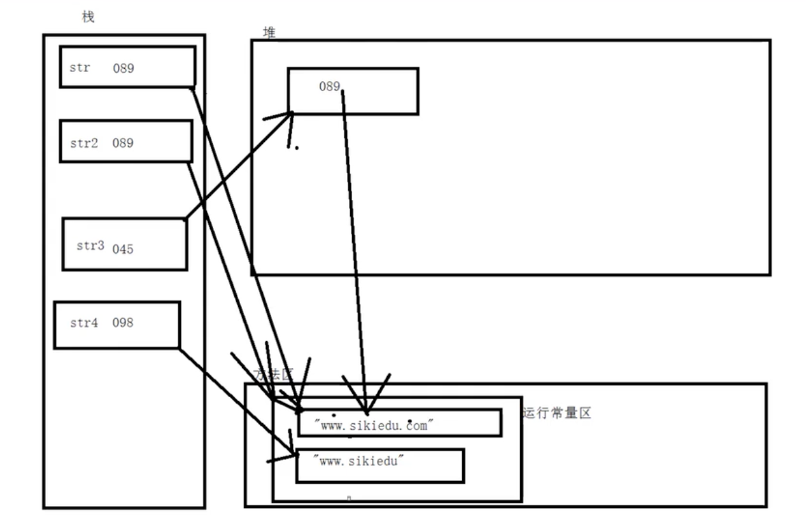
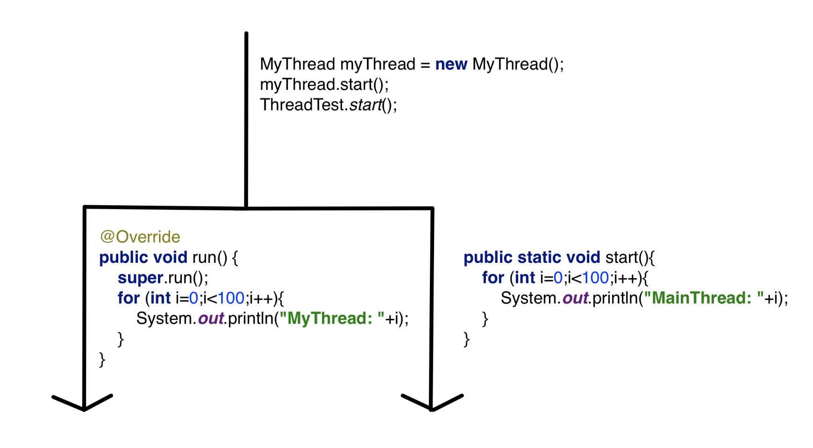
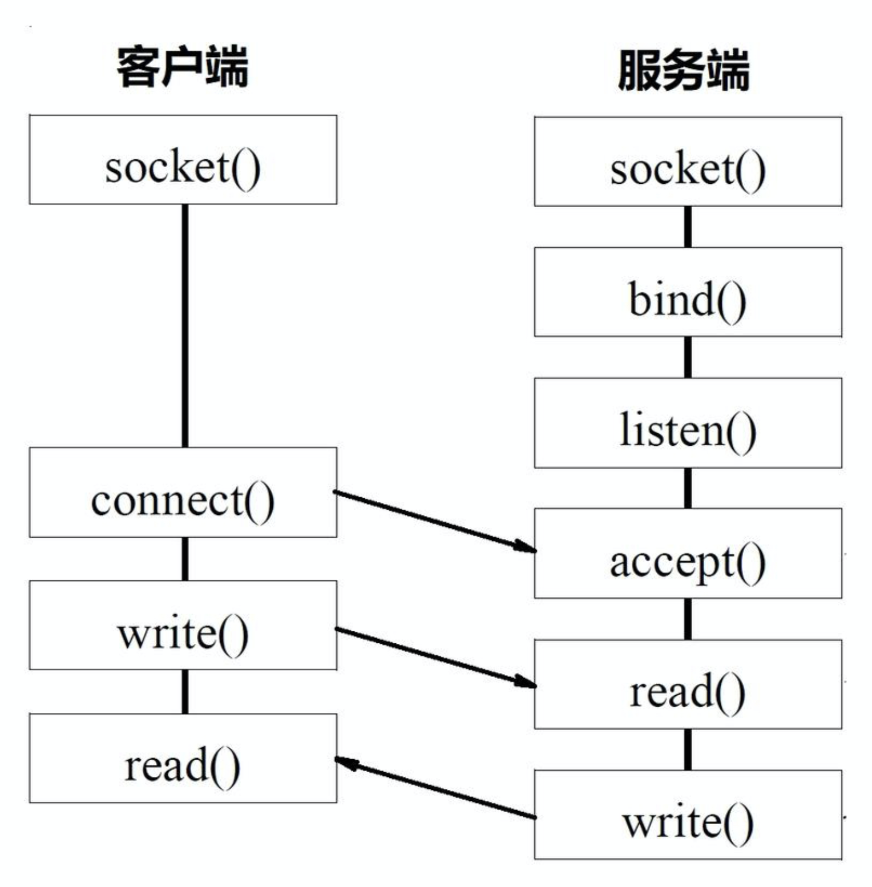
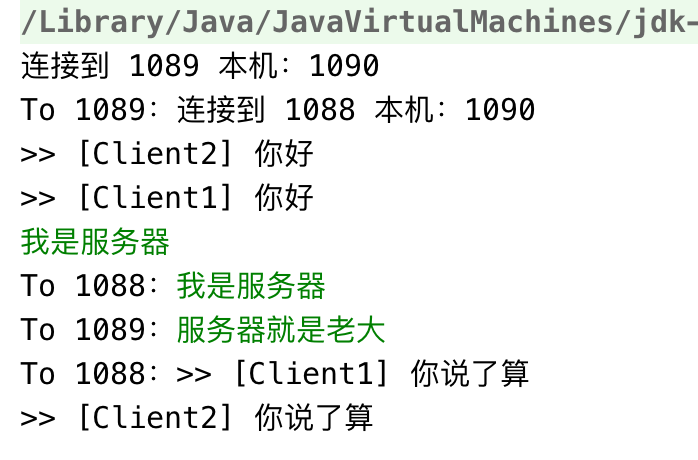
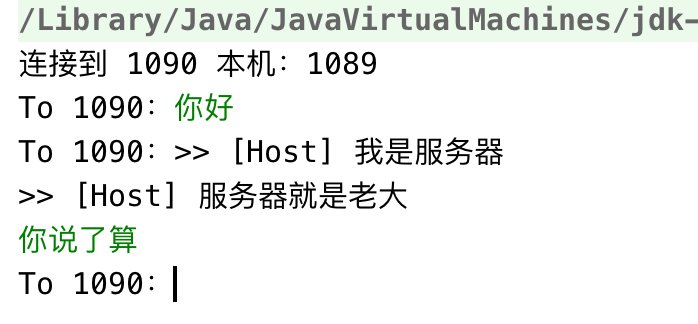
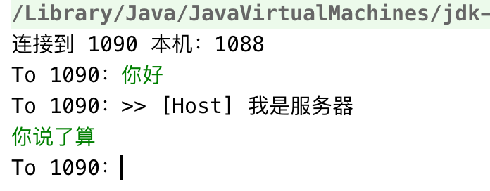
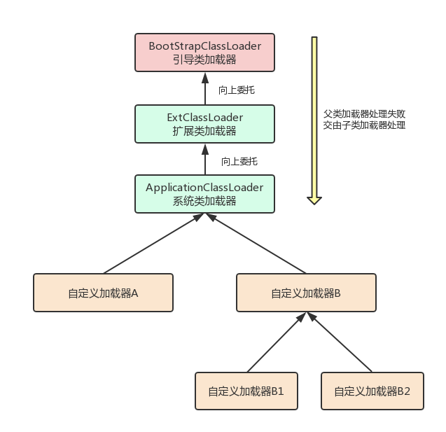

java学习笔记
Java
定义常量
自定义常量
1 | final float PI=3.14f |
字面值常量
运算符
在java中，浮点数运算具有不精确性，浮点数本身是非精确存储
字符串可以用 + 拼接
字符串与整型+运算，结果仍是字符串
字符与整型+运算结果为ASCII码的运算结果
逻辑运算
- 短路与：&& 短路或：| |
- 与：& 或：|
1 | int a=10,b=10; |
位运算
计算机正数存储原码，负数存储补码便于运算。
- 正数：原码、反码、补码相同
- 负数：原码(符号位为1)、反码(符号位不变，其余取反)、补码(反码加一)
-9: 原码 1000 0000 0000 1001 反码 1111 1111 1111 0110 补码 1111 1111 1111 0111
-7 1000 0000 0000 0111 1111 1111 1111 1000 1111 1111 1111 1001
-9 & -7 1000 0000 0000 1111 1111 1111 1111 0000 1111 1111 1111 0001
~ 按位取反 ^ 按位异或 << 左移(高位抛弃) >>右移 (高位符号位补齐，低位抛弃) >>>>无符号右移
三元运算符
? : 规则： 布尔表达式 | 7>8 ? 表达式1 ：表达式2
1 | System.out.println(a>b?a:b); |
类型转换
隐式类型转换
小类型转换为大类型会自动转换： byte -> short , char -> int -> long -> float -> double
1 | 虽然float比long小，但因为存储方法不一致导致 float 里面可以存储的数据范围比 long 要大( java 中 float 4个字节 的范围：3.4e+38 - 1.4e-45 ; long 占用 8 个字节 范围：-2^63 - +2^63 ) |
1 | public static void main(String[] args){ |
显式类型转换
强制类型转换：大类型数据赋值给小类型数据。
1 | int a=10; |
流程控制
语句块
语句块的执行顺序从上到下
语句块可以访问外面定义的变量，外面不能访问语句块内部定义变量
流程控制
控制程序中语句执行的顺序
条件语句
1
2
3if (bool表达式){
// 语句，bool为 true 执行。
}if( ){ //语句 }else{ //语句 }
if(){
}else if(){
}else{
}
Switch 语句
1
2
3
4
5
6
7
8switch(variable){ // variable 可以是字符串
case 1:
break;
case 2:
break;
default:
break;
}while 语句
1
2
3
4
5
6
7while(条件){
// 语句
}
//赋值语句可以放在条件中
while ((input = fileInputStream.read(b)) != -1) {
//...
}do - while 先执行一遍循环体
1
2
3do{
// 循环体
}while(布尔表达式)for 循环
1
2
3for(init ; condition ; update){
// 循环体
}
字符串 (引用数据类型 - reference type)
字符串变量声明在栈中。
字符串本身无法被修改，变量指向字符串存储的地址，只能分配新的内存再使变量指向其地址。
字符串常量
存放在方法区的运行常量区中，不可修改，栈中的变量指向内容相同的字符串常量时，不在开辟新的空间
1 | String str = "abc"; |
字符串变量
new 得到的对象存放在堆中，堆中保存String传入的字符串地址，变量 str 则保存堆中对象的地址
1 | String str = new String("abc"); |
字符串比较
若同为字符串变量或常量，则比较引用；若二者不同则比较字符串本身

例：
1
2
3
4
5
6
7
8
9
10
11
12String str1 = "abc";
String str2 = "abc";
String str3 = new String("abc");
String str4 = "abcd";
// 比较引用
System.out.println(str1 == str2); //true
System.out.println(str2 == str3); //false
System.out.println(str1 == str4); //false
// 比较字符串
str1.equals(str3); // true
字符串 API
1 | String str = "abc"; |
数组
引用类型和基本类型变量创建的不同
所有局部变量都存放在栈里，在方法里创建的变量都是局部变量
基本类型不管是否赋值，都已经分配了空间
引用类型，声明只在栈分配内存(存储引用)、初始化在堆或者方法区里
声明
1 | int[] array = new int[3]; //按照默认值初始化0 |
数据类型默认值
基本类型是0 (0 0.0 0所代表的字符 false)
引用类型是null , null数组不能访问其属性及内容。
数组名的赋值只赋值引用
赋值
1 | import java.util.Arrays; |
特殊创建
1 | int[][] array = new int[10][]; |
方法
java中引用类型传入方法会同步修改，对指针进行封装
1 | public static void method(int [] a){ |
方法重载
相同方法名，不同参数
方法重写 override
子类对父类，参数相同，方法名相同
帮助文档生成
必须 public 类才能生成
1 | javadoc -d 要生成的文件夹名 xxx.java |
类和面向对象
类中的属性未初始化不可使用，默认为null；
面向对象程序设计以对象为核心，该方法认为程序由一系列对象组成。类是对现实世界的抽象，包括表示静态属性的数据和对数据的操作，对象是类的实例化。对象间通过消息传递相互通信，来模拟现实世界中不同实体间的联系。在面向对象的程序设计中，对象是组成程序的基本模块。
面向对象程序设计（Object Oriented Programming，OOP）是一种计算机编程架构。OOP的一条基本原则是计算机程序由单个能够起到子程序作用的单元或对象组合而成。OOP达到了软件工程的三个主要目标：重用性、灵活性和扩展性。OOP=对象+类+继承+多态+消息，其中核心概念是类和对象。
匿名对象：
new Object(); //适用只使用一次
成员变量
在类中定义的变量，不占任何内存。在其创建对象时分配空间，堆。
局部变量则在栈中存储，方法调用结束销毁，且必须初始化
可将对象作为类的成员变量
垃圾回收机制 (GC)
堆是垃圾回收的主要区域，可以分为新生代和老年代(tenured)。新生代用于存放刚创建的对象以及年轻的 对象，如果对象一直没有被回收，生存得足够长，老年对象就会被移入老年代。
标记-清除算法(Mark-Sweep)从根节点开始标记所有可达对象，其余没标记的即为垃圾对象，执行清除。但回收后的空间是不连续的。
复制算法(copying)将内存分成两块，每次只使用其中一块，垃圾回收时，将标记的对象拷贝到另外一块中，然后完全清除原来使用的那块内存。复制后的空间是连续的。
复制算法适用于新生代，因为垃圾对象多于存活对象，复制算法更高效。 标记-压缩算法(Mark-compact)适合用于老年代的算法(存活对象多于垃圾对象)。
构造方法
1 | public Object(){ |
this指针
this 代表当前类，可以通过 this 访问方法和成员变量
1 | class Object{ |
private & public
私有化与公有化
1 | // 将属性全部私有，利用get、set方法对属性操作,体现了封装性及安全性 |
static关键字（静态变量）
可修饰成员变量和成员方法
修饰成员变量表示静态变量，静态变量对所有对象共用，在内存中保存一份
修饰成员变量表示静态方法，静态方法只能访问静态变量(在静态区中存储) 可以把成员变量作为参数传递给静态方法。
静态成员变量通过类名访问；Object.variable；其实例化的所有对象值一致
1
2
3
4
5
6
7
8
9
10
11
12
13
14class Object{
public static String name;
public int age;
public static void method(Object ob){
// 通过参数对对象进行访问；
}
}
public class Main{
public static void main(String[] args){
Object object = new Object();
Object.name = "asdf";
}
}static 随着类的加载而加载，优先于对象存在。所有对象共享(可以通过对象或者类来访问)
main 放法 为特殊的静态方法
main(String[] args); 中 args 用来传递参数
1
java Object 参数
static 实现工具类
工具类不需要存储数据，不需要实例化，利用 static 构造静态方法
静态代码块
1 | //放在类里，只会执行一次 |
继承
1 | class person{ |
tips：
java不支持多继承，即同时继承多个类，但支持多层继承
子类不能访问父类的私有成员，但子类包含父类的私有成员不能直接访问
子类和父类中有同名的变量，就近原则
可以通过super访问父类的 public 变量、方法和构造方法；this 访问当前类的成员变量，方法，构造
super 和 this 调用构造方法必须在第一行
子类构造子类对象时，会调用父类的构造放法，如果父类没有无参数构造方法，则必须在子类构造方法显式的调用父类的有参数构造方法(利用 super 和 this)
1 | class person{ |
this 通常用于存在多个构造方法时，在其中一个构造方法中调用同类的其他构造方法，从而简洁代码
1
2
3
4
5
6
7
8
9
10
11
12
13
14class person{
private String name;
private int age;
private char gender;
public Person(int age, String name){
this.age = age;
this.name = name;
}
public Person(int age, String name, char gender) {
this(age, name);
this.gender = gender;
}
}
方法重写(override)或覆盖
子类的方法名、参数、返回值和父类相同
意义：子类和父类有相同功能，但是子类有自己的特定内容和特定实现方式。为了见名知意，保持父类的名字，自己重新实现方法体。
tips：
- 不能重写private方法, 否则相当于在子类创建新的方法
- 重写的时候访问权限不能更低(public 最高)
方法重载(overload)
- 同一个类中，相同的方法名，参数不同，返回值不要求
final 关键字
final 类 (表示类不可继承)
1
final class Object{}
fianl 方法(表示这个方法不能被子类重写)
1
public final void method(){}
final 变量 (常量)
1
final int con;
java 类包(package)
通过包对类进行管理，避免重名问题。不同包里可以包含同名的类
包的定义
1 | package xx.xx.xx; |
权限修饰符
应用：类、成员变量、成员方法
default 在同一个包里使用，不能在包外使用；在成员函数定义时，没有加访问限制符的函数，其访问等级为default
父类中的 protected 成员变量在子类可以直接访问
内部类
内部类寄生在外部类对象，外部类对象中可以有多个内部类对象，内部类对象只有一个外部类对象
内部类不能单独存在
1 | public class InnerClass { |
从外部类直接访问public内部类
1 | Outer.Inner inner = new Outer().new Inner(); |
局部内部类
方法内定义的局部类
1 | public static void main(String[] args){ |
抽象匿名内部类
1 | // 抽象类 |
多态
多态指同一个实体同时具有多种形式。它是面向对象程序设计（OOP）的一个重要特征。如果一个语言只支持类而不支持多态，只能说明它是基于对象的，而不是面向对象的。C++中的多态性具体体现在运行和编译两个方面。运行时多态是动态多态，其具体引用的对象在运行时才能确定。编译时多态是静态多态，在编译时就可以确定对象使用的形式。
多态：同一操作作用于不同的对象，可以有不同的解释，产生不同的执行结果。在运行时，可以通过指向基类的指针，来调用实现派生类中的方法。即父类的引用在运行过程中存在不同的状态
1 | BaseClass bc = null; |
java多态的前提：
- 继承
- 重写
- 父类对象的引用指向子类对象
继承关系：IS-A；组合关系Has-A；依赖关系 USE-A
1 | class Animal { |
子类 Cat 重写了父类Animal的非静态成员方法am.eat();的输出结果为：猫吃饭。 子类 Cat 重写了父类(Animal)的静态成员方法am.sleep();的输出结果为：动物在睡觉 未被子类（Cat）重写的父类（Animal）方法am.run()输出结果为：动物在奔跑
成员变量 编译看左边(父类),运行看左边(父类) 成员方法 编译看左边(父类)，运行看右边(子类)。动态绑定 静态方法 编译看左边(父类)，运行看左边(父类)。 (静态和类相关，算不上重写，所以，访问还是左边的) 只有非静态的成员方法,编译看左边,运行看右边
1 | BaseClass bc = new SubClass(); |
继承的弊端
不能使用子类特有的成员属性和子类特有的成员方法。
解决: 强制转换
1 | Cat cat = (Cat) animal; |
抽象类
抽象方法是一种特殊的方法：它只有声明，而没有具体的实现。抽象方法的声明格式为
1 | abstract void fun(); |
抽象方法必须用abstract关键字进行修饰。如果一个类含有抽象方法，则称这个类为抽象类，抽象类必须在类前用abstract关键字修饰。
因为抽象类中含有无具体实现的方法，所以不能用抽象类创建对象, 抽象类就是为了继承而存在的.
包含抽象方法的类称为抽象类，但并不意味着抽象类中只能有抽象方法，它和普通类一样，同样可以拥有成员变量和普通的成员方法。注意，抽象类和普通类的主要有三点区别：
1. 抽象方法必须为public或者protected（因为如果为private，则不能被子类继承，子类便无法实现该方法），缺省情况下默认为public。
2. 抽象类不能用来创建对象；
3. 如果一个类继承于一个抽象类，则子类必须实现父类的抽象方法。如果子类没有实现父类的抽象方法，则必须将子类也定义为为abstract类。
在其他方面，抽象类和普通的类并没有区别。
类特殊方法重写（override）
toString方法
1 | Object ob = new Object(); |
equals方法
1 | public boolean equals(Object o){ |
接口（interface）
软件工程中，接口泛指供别人调用的方法或者函数，Java语言设计者的初衷，它是对行为的抽象
接口的形式如下：
1 | [public] interface InterfaceName{} |
- 接口内只能是抽象方法（接口是完全抽象化的类，里面没有完整的方法），方法会被隐式地指定为public abstract方法且只能是public abstract方法（用其他关键字，比如private、protected、static、 final等修饰会报编译错误），并且接口中所有的方法不能有具体的实现
- 接口中可以含有变量，接口中的变量会被隐式地指定为public static final变量（并且只能是public static final变量，用private修饰会报编译错误） ，静态常量
- 接口是一种极度抽象的类型，它比抽象类更加“抽象”，并且一般情况下不在接口中定义变量。
要让一个类遵循某组特地的接口需要使用implements关键字，具体格式如下：
1 | class ClassName implements Interface1,Interface2,[....]{ |
- 允许一个类遵循多个特定的接口
- 一个非抽象类遵循了某个接口，就必须实现该接口中的所有方法
接口和类的区别
- 语法层面上的区别
1）抽象类可以提供成员方法的实现细节，而接口中只能存在public abstract 方法；
2）抽象类中的成员变量可以是各种类型的，而接口中的成员变量只能是public static final类型的；
3）接口中不能含有静态代码块以及静态方法，而抽象类可以有静态代码块和静态方法；
4）一个类只能继承一个抽象类，而一个类却可以实现多个接口。
2.设计层面上的区别
抽象类是对一种事物的抽象，即对类抽象，而接口是对行为的抽象。
继承是一个 "IS-A"的关系，而 接口实现则是 "HAS-A"的关系。如果一个类继承了某个抽象类，则子类必定是抽象类的种类，而接口实现则是有没有、具备不具备的关系，比如鸟是否能飞（或者是否具备飞行这个特点），能飞行则可以实现这个接口，不能飞行就不实现这个接口。
抽象类作为很多子类的父类，它是一种模板式设计。而接口是一种行为规范，它是一种辐射式设计。
对于抽象类，如果需要添加新的方法，可以直接在抽象类中添加具体的实现，子类可以不进行变更；而对于接口则不行，如果接口进行了变更，则所有实现这个接口的类都必须进行相应的改动。
Example:
1 | abstract class Door { |
接口与匿名内部类
1 | public class NonNameInnerClass { |
常用类
Scanner
1 | import java.utils.Scanner; |
StringBuffer && StringBuilder
创建的字符串可以被修改
1 | StringBuffer sb = new StringBuffer();// 可以指定容量 |
区别
执行速度，在这方面运行速度快慢为：StringBuilder > StringBuffer > String
String为字符串常量，而StringBuilder和StringBuffer均为字符串变量，即String对象一旦创建之后该对象是不可更改的，但后两者的对象是变量，是可以更改的。
Java中对String对象进行的操作实际上是一个不断创建新的对象并且将旧的对象回收的一个过程，所以执行速度很慢。而StringBuilder和StringBuffer的对象是变量，对变量进行操作就是直接对该对象进行更改，而不进行创建和回收的操作，所以速度要比String快很多
StringBuilder和StringBuffer一样，都是继承自抽象类AbstractStringBuilder类，也是一个可变的字符序列。StringBuilder和StringBuffer非常相似，甚至有互相兼容的API，不过，StringBuilder不是线程安全的，这是和StringBuffer的主要区别
当 StringBuffer 的缓冲区满之后，java会申请2倍大小的空间把原来的值赋值过去。
1 | String str="abc"+"de"; |
这样输出结果也是“abcde”和“abcde”，但是String的速度却比StringBuilder的反应速度要快很多，这是因为第1行中的操作和
1 | String str="abcde"; |
是完全一样的，所以会很快，而如果写成下面这种形式
1 | String str1="abc"; |
那么JVM就会像上面说的那样，不断的创建、回收对象来进行这个操作了。速度就会很慢。所以在实际使用时，如果经常需要对一个字符串进行修改，例如插入、删除等操作，使用StringBuffer要更加适合一些。
字符的存储，JDK9之前是char存储，JDK9之后是byte存储
####互相转换
1 | String str= "qwert"; |
Arrays
静态工具类
method：
1 | import java.util.Arrays; |
Math
1 | Math.E; //自然对数e |
BigDecimal & BigInteger
BigDecimal由任意精度整数非标度值和32位整数标度组成 。
BigInteger由不可变的任意长度整数
1 | BigDecimal bd = new BigDecimal(String str); // 小数字符串 |
Tips：BigDecimal bd = new BigDecimal(0.02); // 0.0200000000000000004163336: $ $
1 | bd.divide(BigDecimal divisor,int scale, int roundingMode); |
1 | BigInteger bigInteger = new BigInteger(String str); |
Date && Calendar
时间类，Date被 Calendar 取代
1 | Date d = new Date(); |
1 | Calendar calendar = Calendar.getInstance(); |
包装类
存于栈上
| 包装类 | 基本类 |
|---|---|
| Byte | byte |
| short | |
| Integer | int |
| Long | long |
| double | |
| char | |
| boolean |
1 | Integer.parseInt(String str); // 整数字符串转为int |
集合类 Collection
java.util 库提供了一套相当完整的集合类(collection classes)来解决这个问题，其中基本的类型有 List 、Set 、Queue 和 Map。这些类型也被称作容器类(container classes)，集合还有一些其它特性。例如，Set 对于每个值都只保存一个对象，Map 是一个 关联数组，允许将某些对象与其他对象关联起来。Java 集合类都可以自动地调整自己 的大小。
ArrayList LinkedList Vector // 元素可重复，有序
HashSet TreeSet LinkedSet //不可重复，无序
HashMap TreeMap LinkedMap //
基本概念
- 集合(Collection): 一个独立元素的序列，这些元素都服从一条或多条规则。List 必须以插入的顺序保存元素，Set 不能包含重复元素，Queue 按照排队规则来确 定对象产生的顺序(通常与它们被插入的顺序相同)。
- 映射(Map):一组成对的“键值对”对象，允许使用键来查找值。map 允 许我们使用一个对象来查找另一个对象，它也被称作关联数组(associative array)， 因为它将对象和其它对象关联在一起;或者称作字典(dictionary)，
案例-集合打印
1 | import java.util.*; |
结论：
Collection&&Map区别在于集合中的每个 “槽”(slot) 保存的元素个数。Collection 类型在每个槽中只能保存一个元素，Map 在每个槽中存放了两个元素，即键和与之关联的值。- ArrayList 和 LinkedList 都是 List 的类型，从输出中可以看出，它们都按插入顺序保存元素。HashSet ，TreeSet 和 LinkedHashSet 是 Set 的类型。从输出中可以看到，Set 仅保存每个相同项中的一个，并且不同的 Set 实现存储元素的方式也不同。
- HashSet ，TreeSet 和 LinkedHashSet 是 Set 的类型。从输出中可以看到，Set 仅保存每个相同项中的一个
- Set是检索元素的最快方法， TreeSet 按比较结果的升序保存对象； LinkedHashSet 按照被添加的先后顺序保存对象。
- HashMap 实现使用了非常快速的算法来控制顺序，键和值不是插入顺序保存在 HashMap 中
- TreeMap 通过比较结果的升序来保存键
- LinkedHashMap 在保持 HashMap 查找速度的同时按键的插入顺序保存键。
List
List 接口在 Collection 的基础上添加了 许多方法，允许在 List 的中间插入和删除元素。
有两种类型的 List :
基本的 ArrayList ，内部通过数组实现，擅长随机访问元素，但在 List 中间插入和删除元素时速度较慢。
LinkedList ，链表通过代价较低的在 List 中间进行的插入和删除操作，提供了优化的顺序访问。LinkedList 对于随机访问来说相对较慢，但它具有比 ArrayList 更大的特征集。
1
2
3LinkedList linkedList = new LinkedList();
linkedList.addFirst();
linkedList.addLast();
ArrayList && Vector
ArrayList && Vector 几乎一样，区别在于 Vector 线程安全，因此效率低于ArrayList
1 | //constructors |
Example：
1 | /*##########################################################*/ |
Arrays.asList() 方法接受一个数组或是逗号分隔的元素列表(使用可变参数)， 并将其转换为 List 对象。Collections.addAll() 方法接受一个 Collection 对象，以 及一个数组或是一个逗号分隔的列表，将其中元素添加到 Collection 中。下边的示例展示了这两个方法，以及更通用的 addAll() 方法，所有 Collection 类型都包含该方 法:
1 | /** Arrays.asList(); 转化为 List 对象，继承于 Collection |
####Stack 栈
堆栈是 “后进先出”(LIFO)集合。它有时被称为叠加栈(pushdown stack)，因为 最后 “压入”(push)栈的元素，第一个被 “弹出”(pop)
Java 1.0 中附带了一个 Stack 类，结果设计得很糟糕，Java 6 添加了 ArrayDeque ，其中包含直接实现堆栈功能的方法:
1 | import java.util.ArrayDeque; |
Set 集合
Set 不保存重复的元素。Set 最常见的用途是测试归属性，可以很轻松地询问某个对象是否 在一个 Set 中。因此，查找通常是 Set 最重要的操作，因此通常会选择 HashSet 实 现，该实现针对快速查找进行了优化。
Set 具有与 Collection 相同的接口，因此没有任何额外的功能，不像前面两种不同类型的 List 那样。实际上，Set 就是一个 Collection ，只是行为不同
由 HashSet 维护的顺序与 TreeSet 或 LinkedHashSet 不同，因为它们的实现具有不同的元素存储方式。TreeSet 将元素存储在红-黑树数据结构中，而 HashSet 使用散列函数。LinkedHashSet 因为查询速度的原因也使用了散列，但是使用了链表来维护元素的插入顺序。
1 | Random rand = new Random(47); |
Map 映射
保存键值对 Key ， Value、Key不可重复
衍生类：HashMap、TreeMap、LinkedMap
HashMap && HashTable
相同点：
实现原理相同，功能相同，底层都是哈希表结构，查询速度快，在很多情况下可以互用
不同点：
1、Hashtable是早期提供的接口，HashMap是新版JDK提供的接口。
2、Hashtable继承Dictionary类，HashMap实现Map接口。
3、Hashtable线程安全，HashMap线程非安全。
4、Hashtable不允许null值，HashMap允许null值
1 | Map<Integer, Integer> map = new HashMap<>(); |
Queue 队列
范型
利用范型自我实现ArrayList
1 | package com.liuyang.Tools; |
Iterators 迭代器
目标：不重写代码就可以应用于不 同类型的集合
迭代器是一个对象，它在一个序列中移动并选择该序列中的每个对象，而客户端程序员不知道或不关心该序列的底 层结构。
迭代器通常被称为轻量级对象(lightweight object):创建它的代价小。 可以看到一些对迭代器有些奇怪的约束。例如，Java 的 Iterator 只能单向移动。这个 Iterator 只能用来:
- 使用 iterator() 方法要求集合返回一个 Iterator。Iterator 将准备好返回序列中的第一个元素。
- 使用next()方法获得序列中的下一个元素。
- 使用hasNext()方法检查序列中是否还有元素。
- 使用remove()方法将迭代器最近返回的那个元素删除。
1 | // 初始化列表，元素为Apple |
Iterator 的真正威力:能够将遍历序列的操作与该序列的底层结构分离。出于这个原因，我们有 时会说:迭代器统一了对集合的访问方式。
ListIterator
- ListIterator 是一个更强大的 Iterator 子类型，它只能由各种 List 类生成。
- It- erator 只能向前移动，而 ListIterator 可以双向移动。
- 还可以生成相对于迭代器在列表中指向的当前位置的后一个和前一个元素的索引，并且可以使用 set() 方法替换它访问过的最近一个元素。
- 通过调用 listIterator() 方法来生成指向 List 开头 处的 ListIterator ，还可以通过调用 listIterator(n) 创建一个一开始就指向列表索 引号为 n 的元素处的 ListIterator
1 | ListIterator<Apple> it = list.listIterator(); |
异常处理
try{}catch{} 语句
Java 中所有异常类继承自 Java.lang.Exception
1 | try{ |
拆箱 && 装箱
装箱：Integer i = 10; 自动包装机制把基本类型 10 封装为Integer类型
拆箱：i = i + 100 Integer 拆箱转为 基本类型 int，再加法运算.
文件操作
文件： 文本文件、非文本文件（二进制文件）
文件操作对象包括文件和文件夹（目录）
Java的文件操作通过File对象实现
1 | //File 对象构造方法 |
Tip:
可以通过renameTo（）方法实现文件和文件夹的剪切操作
1 | /** 文件拷贝 |
###数据流（IO流）基类
字节流 可以读取任意类型数据
抽象基类： InputStream、OutputStream
字符流 只可以读取文本数据
抽象基类： Reader、Writer
字节流和字符流的区别： （1）读写单位不同：字节流以字节（8bit）为单位，字符流以字符为单位，根据码表映射字符，一次可能读多个字节。 （2）处理对象不同：字节流能处理所有类型的数据（如图片、avi等），而字符流只能处理字符类型的数据。 （3）缓冲区：字节流在操作的时候本身是不会用到缓冲区的，是文件本身的直接操作的；而字符流在操作的时候下后是会用到缓冲区的，是通过缓冲区来操作文件。
结论：优先选用字节流。首先因为硬盘上的所有文件都是以字节的形式进行传输或者保存的，包括图片等内容。但是字符只是在内存中才会形成的，所以在开发中，字节流使用广泛。
IO字节流
IO流操作结束必须调用 close() 方法
FileOutputStream
文件输出流是用于将数据写入File或FileDescriptor的输出流。 文件是否可用或是否可以创建取决于底层平台。 特别是某些平台允许一次仅打开一个文件以供写入FileOutputStream （或其他文件写入对象）。 在这种情况下，如果涉及的文件已经打开，则此类中的构造函数将失败。
FileOutputStream用于写入诸如图像数据的原始字节流。 要编写字符流，请考虑使用FileWriter 。
Note:
要释放此流使用的资源，应直接或通过通过（Java7 以后）try-with-resources调用close() 。 子类负责清理子类获取的资源。
构造方法
1 | FileOutputStream(File file) |
实例方法
| 变量和类型 | 方法 | 描述 |
|---|---|---|
void |
close() |
关闭此文件输出流并释放与此流关联的所有系统资源。 |
FileChannel |
getChannel() |
返回与此文件输出流关联的唯一FileChannel对象。 |
FileDescriptor |
getFD() |
返回与此流关联的文件描述符。 |
void |
write(byte[] b) |
将指定字节数组中的 b.length字节写入此文件输出流。 |
void |
write(byte[] b, int off, int len) |
将从偏移量 off开始的指定字节数组中的 len字节写入此文件输出流。 |
void |
write(int b) |
将指定的字节写入此文件输出流。 |
FileInputStream
实例方法
| 变量和类型 | 方法 | 描述 |
|---|---|---|
int |
available() |
返回可以从此输入流中读取（或跳过）的剩余字节数的估计值，而不会被下一次调用此输入流的方法阻塞。 |
void |
close() |
关闭此文件输入流并释放与该流关联的所有系统资源。 |
FileChannel |
getChannel() |
返回与此文件输入流关联的唯一[FileChannel]对象。 |
FileDescriptor |
getFD() |
返回 FileDescriptor对象，该对象表示与此FileInputStream正在使用的文件系统中的实际文件的连接。 |
int |
read() |
从此输入流中读取一个字节的数据，末尾返回-1 |
int |
read(byte[] b) |
从此输入流中读取最多 b.length字节的数据到字节数组b中，返回每次读取长度 |
int |
read(byte[] b, int off, int len) |
从此输入流 len最多 len字节的数据读入一个字节数组。 |
long |
skip(long n) |
跳过并从输入流中丢弃 n字节的数据。 |
字节数组使用
数组大小不可过大，否则会导致内存不足，读取到数组时按数组大小一次读取，合适的数组大小会提升性能。
1 | //read |
关闭方法
JAVA的流不单在内存中分配了空间，也在操作系统占有了资源，比如占用的端口,文件句柄,网络操作数据库应用等。java的垃圾回收机制GC是能从内存中回收不使用的对象，但对操作系统分配的资源是无法干预的，所以就要调用close()方法来通知系统来释放这个资源。
Java7 以前
1 | InputStream is = null; |
Java7 以后，使用try-with-resources,将需要关闭的流对象放在try的()中创建
1 | try(InputStream fileInputStream = new FileInputStream(text)) { |
BufferInputStream
BufferedInputStream向另一个输入流添加功能 - 即缓冲输入并支持mark和reset方法的功能。
创建BufferedInputStrea会创建内部缓冲区阵列。 当读取或跳过来自流的字节时，会根据需要从包含的输入流中一次多个字节向内部缓冲区重新填充。 mark操作会记住输入流中的一个点，并且reset操作会导致在从包含的输入流中获取新字节之前重新读取自最近的mark操作以来读取的所有字节。
buffer 性能较高，使用字节数组的性能略低但差别不大。
| 变量和类型 | 方法 | 描述 |
|---|---|---|
int |
available() |
返回可以从此输入流中读取（或跳过）的字节数的估计值，而不会被下一次调用此输入流的方法阻塞。 |
void |
close() |
关闭此输入流并释放与该流关联的所有系统资源。 |
void |
mark(int readlimit) |
标记此输入流中的当前位置，随后对reset方法的调用会在最后标记的位置重新定位此流，以便后续读取重新读取相同的字节。 readlimit- 标记位置变为无效之前可读取的最大字节数限制 | |boolean|markSupported()| 测试此输入流是否支持mark和reset方法。 | |int|read()| 从输入流中读取下一个数据字节。 | |int|read(byte[] b, int off, int len)| 从给定的偏移量开始，将此字节输入流中的字节读入指定的字节数组。 | |void|reset()| 将此流重新定位到上次在此输入流上调用mark方法时的位置 | |long|skip(long n)| 见的总承包skip的方法InputStream` 。 |
BufferOutputStream 包装流
该类实现缓冲输出流。 通过设置这样的输出流，应用程序可以将字节写入基础输出流，而不必为写入的每个字节调用底层系统，节约性能。
对OutputStream类进行包装，内部设置缓冲区
构造方法
FileOutputStream 继承自 OutputStream，也可作为参数
| 构造器 | 描述 |
|---|---|
BufferedOutputStream(OutputStream out) |
创建新的缓冲输出流以将数据写入指定的基础输出流。 |
BufferedOutputStream(OutputStream out, int size) |
创建新的缓冲输出流，以使用指定的缓冲区大小将数据写入指定的基础输出流。 |
实例方法
| 变量和类型 | 方法 | 描述 |
|---|---|---|
void |
flush() |
刷新此缓冲的输出流。 |
void |
write(byte[] b, int off, int len) |
将从偏移量 off开始的指定字节数组中的 len字节写入此缓冲输出流。 |
void |
write(int b) |
将指定单个字节写入此缓冲区的输出流，减少对硬盘的io次数 |
例：
1 | /** |
IO字符流
抽象基类： System.io.write、System.io.read
用于写入字符流的抽象类。 子类必须实现的唯一方法是write（char []，int，int），flush（）和close（）。 但是，大多数子类将覆盖此处定义的一些方法，以提供更高的效率，附加功能或两者兼而有之。
OutputStreamWriter
包装流
从字符流到字节流的桥接器：使用指定的charset将写入其中的字符编码为字节。 它使用的字符集可以通过名称指定，也可以明确指定，或者可以接受平台的默认字符集。
每次调用write（）方法都会导致在给定字符上调用编码转换器。 生成的字节在写入底层输出流之前在缓冲区中累积。
注意： 传递给write（）方法的单个字符不会被缓冲。
为了获得最高效率，考虑在BufferedWriter中包装OutputStreamWriter，以避免频繁的转换器调用。 例如：
1 | Writer out = new BufferedWriter(new OutputStreamWriter(System.out)); |
构造方法
| 构造器 | 描述 |
|---|---|
OutputStreamWriter(OutputStream out) |
创建使用默认字符编码的OutputStreamWriter。 |
OutputStreamWriter(OutputStream out, String charsetName) |
创建使用指定charset的OutputStreamWriter。 |
OutputStreamWriter(OutputStream out, Charset cs) |
创建使用给定charset的OutputStreamWriter。 |
OutputStreamWriter(OutputStream out, CharsetEncoder enc) |
创建使用给定charset编码器的OutputStreamWriter。 |
实例方法
| 变量和类型 | 方法 | 描述 |
|---|---|---|
void |
flush() |
刷新流。 |
String |
getEncoding() |
返回此流使用的字符编码的名称。 |
void |
write(char[] cbuf, int off, int len) |
写一个字符数组的一部分。 |
void |
write(int c) |
写一个字符。 |
void |
write(String str, int off, int len) |
写一个字符串的一部分。 |
1 | // 方法写 |
InputStreamReader
InputStreamReader是从字节流到字符流的桥接器：它使用指定的[charset]读取字节并将其解码为字符。 它使用的字符集可以通过名称指定，也可以明确指定，或者可以接受平台的默认字符集。
为了获得最高效率，在BufferedReader中包装InputStreamReader。 例如：
1 | BufferedReader in = new BufferedReader(new InputStreamReader(System.in)); |
| 构造器 | 描述 |
|---|---|
InputStreamReader(InputStream in) |
创建一个使用默认字符集的InputStreamReader。 |
InputStreamReader(InputStream in, String charsetName) |
创建一个使用指定charset的InputStreamReader。 |
InputStreamReader(InputStream in, Charset cs) |
创建一个使用给定charset的InputStreamReader。 |
InputStreamReader(InputStream in, CharsetDecoder dec) |
创建一个使用给定charset解码器的InputStreamReader。 |
| 变量和类型 | 方法 | 描述 |
|---|---|---|
String |
getEncoding() |
返回此流使用的字符编码的名称。 |
int |
read() |
读一个字符。 |
int |
read(char[] cbuf, int offset, int length) |
将字符读入数组的一部分。 |
boolean |
ready() |
判断此流是否可以读取。 |
字符读取**
1 | public static String read(String path, String charset){ |
FileWriter && FileReader
java.lang.Object
java.io.Writer
- java.io.OutputStreamWriter
- java.io.FileWriter
- java.io.OutputStreamWriter
java.io.InoutStreamReader
- Java.io.FileReader
与父类类似，封闭性更好，创建简单
调用时默认使用平台的charset
FileWriter
| 构造器 | 描述 |
|---|---|
FileWriter(File file) |
给 File写一个 FileWriter ，使用平台的 [default charset] |
FileWriter(FileDescriptor fd) |
构造一个 FileWriter给出的文件描述符，使用该平台的 [default charset] |
FileWriter(File file, boolean append) |
在给出要写入的 FileWriter下构造 File ，并使用平台的 [default charset构造] 一个布尔值，指示是否附加写入的数据。 |
FileWriter(File file, Charset charset) |
构造一个FileWriter给予File编写和[charset] |
FileWriter(File file, Charset charset, boolean append) |
构造FileWriter给出File写入， [charset] 和一个布尔值，指示是否附加写入的数据。 |
FileWriter(String fileName) |
构造一个 FileWriter给出文件名，使用平台的 [default charset] |
FileWriter(String fileName, boolean append) |
使用平台的 [default charset] 构造一个 FileWriter给定一个文件名和一个布尔值，指示是否附加写入的数据。 |
FileWriter(String fileName, Charset charset) |
构造一个FileWriter给出文件名和[charset]。 |
FileWriter(String fileName, Charset charset, boolean append) |
构造一个FileWriter给定一个文件名， [charset] 和一个布尔值，指示是否附加写入的数据。 |
FileReader
| 构造器 | 描述 |
|---|---|
FileReader(File file) |
使用平台 FileReader ，在 File读取时创建一个新的 FileReader。 |
FileReader(FileDescriptor fd) |
使用平台 [default charset] 创建一个新的 FileReader ，给定 FileDescriptor进行读取。 |
FileReader(File file, Charset charset) |
创建一个新的FileReader ，给出File读取和[charset]。 |
FileReader(String fileName) |
使用平台 [default charset] 创建一个新的 FileReader ，给定要读取的文件的 [名称] 。 |
FileReader(String fileName, Charset charset) |
给定要读取的文件的名称和FileReader ，创建一个新的[FileReader] |
BufferedWriter && BufferedReader
BufferedWriter
BufferedWriter将文本写入字符输出流，缓冲字符，以便有效地写入单个字符，数组和字符串。
可以指定缓冲区大小，或者可以接受默认大小。 对于大多数用途，默认值足够大。
提供了一个newLine（）方法，它使用平台自己的行分隔符概念，由系统属性line.separator定义。 并非所有平台都使用换行符（' n'）来终止行。 因此，调用此方法终止每个输出行比直接编写换行符更为可取。
| 构造器 | 描述 |
|---|---|
BufferedWriter(Writer out) |
创建使用默认大小的输出缓冲区的缓冲字符输出流。 |
BufferedWriter(Writer out, int sz) |
创建一个使用给定大小的输出缓冲区的新缓冲字符输出流。 |
1 | BufferedWriter bufferedWriter = |
| 变量和类型 | 方法 | 描述 |
|---|---|---|
void |
flush() |
刷新流。 |
void |
newLine() |
写一个行分隔符。 |
void |
write(char[] cbuf, int off, int len) |
写一个字符数组的一部分。 |
void |
write(int c) |
写一个字符。 |
void |
write(String s, int off, int len) |
写一个字符串的一部分。 |
BufferedReader
由Reader构成的每个读取请求都会导致相应的读取请求由基础字符或字节流构成。 因此，建议将BufferedReader包装在任何read（）操作可能代价高昂的Reader上，例如FileReaders和InputStreamReaders。 例如，
1 | BufferedReader in |
将缓冲指定文件的输入。 如果没有缓冲，read（）或readLine（）的每次调用都可能导致从文件中读取字节，转换为字符，然后返回，这可能是非常低效的。
使用DataInputStreams进行文本输入的程序可以通过用适当的BufferedReader替换每个DataInputStream来进行本地化。
| 构造器 | 描述 |
|---|---|
BufferedReader(Reader in) |
创建使用默认大小的输入缓冲区的缓冲字符输入流。 |
BufferedReader(Reader in, int sz) |
创建使用指定大小的输入缓冲区的缓冲字符输入流。 |
| 变量和类型 | 方法 | 描述 |
|---|---|---|
Stream |
lines() |
返回 Stream ，其元素是从此 BufferedReader读取的行。 |
void |
mark(int readAheadLimit) |
标记流中的当前位置。 |
boolean |
markSupported() |
判断此流是否支持mark（）操作。 |
int |
read() |
读一个字符。 |
int |
read(char[] cbuf, int off, int len) |
将字符读入数组的一部分。 |
String |
readLine() |
读一行文字。 |
boolean |
ready() |
判断此流是否可以读取。 |
void |
reset() |
将流重置为最新标记。 |
long |
skip(long n) |
跳过字符。 |
并发
• 并发是关于正确有效地控制对共享资源的访问。
• 并行是使用额外的资源来更快地产生结果。
将一个程序转换成多个独立运行的子任务，像这样的每个子任务都叫作一个“线程”（Thread）。编写程序时，可将每个线程都想象成独立运行，而且都有自己的专用CPU。一些基础机制实际会为我们自动分割CPU的时间。我们通常不必关心这些细节问题，所以多线程的代码编写是相当简便的。
Java 并发的核心机制是 Thread 类，在该语言最初版本中，Thread (线程)是由 程序员直接创建和管理的。随着语言的发展以及人们发现了更好的一些方法，中间层机制 - 特别是 Executor 框架 - 被添加进来，以消除自己管理线程时候的心理负担(及错误)
Thread(线程)
将任务关联到处理器的软件概念，当创建一个 Thread 时，JVM 将分配一大块内存到专为线程保留的特殊区域上，用于提供运行任务时所需 的一切，包括:
• 程序计数器，指明要执行的下一个 JVM 字节码指令。 • 用于支持 Java 代码执行的栈，包含有关此线程已到达当时执行位置所调用方法的信息。它也包含每个正在执行的方法的所有局部变量 (包括原语和堆对象的引用)。 每个线程的栈通常在 64K 到 1M 之间 。
• 第二个则用于 native code(本机方法代码)执行的栈
• thread-local variables (线程本地变量)的存储区域
• 用于控制线程的状态管理变量
Thread 类
每个线程都有优先权。 具有较高优先级的线程优先于具有较低优先级的线程执行。 每个线程可能也可能不会被标记为守护进程。 当在某个线程中运行的代码创建一个新的Thread对象时，新线程的优先级最初设置为等于创建线程的优先级，并且当且仅当创建线程是守护进程时才是守护进程线程。
当Java虚拟机启动时，通常会有一个非守护进程线程（通常调用某个指定类的名为main的方法）。 Java虚拟机继续执行线程，直到发生以下任一情况：
- 已调用类
Runtime的exit方法，并且安全管理器已允许执行退出操作。 - 通过调用
run方法返回或抛出超出run方法传播的异常，所有非守护程序线程的线程都已死亡。
有两种方法可以创建新的执行线程。
一种是将类声明为Thread的子类。 此子类应覆盖类Thread的run方法。 然后可以分配和启动子类的实例。 例如，计算大于规定值的素数的线程可以写成如下：
1 | class PrimeThread extends Thread { |
另一种方法是声明一个实现Runnable接口的类。 该类然后实现run方法。 然后可以分配类的实例，在创建Thread时作为参数传递，然后启动。 此其他样式中的相同示例如下所示：
1 | class PrimeRun implements Runnable { |
每个线程都有一个用于识别目的的名称。 多个线程可能具有相同的名称。 如果在创建线程时未指定名称，则会为其生成新名称
Example
1 | // 创建线程用例 |

测试类为父线程，Mythread类创建子线程
子线程和父线程同时运行，因此结果具有随机性，打印出的数据顺序非线性。
字段
| 变量和类型 | 字段 | 描述 |
|---|---|---|
static int |
MAX_PRIORITY |
线程可以拥有的最大优先级 (10) |
static int |
MIN_PRIORITY |
线程可以拥有的最低优先级。(1) |
static int |
NORM_PRIORITY |
分配给线程的默认优先级。(5) |
| 构造器 | 描述 |
|---|---|
Thread() |
分配新的 Thread对象。 |
Thread(Runnable target) |
分配新的 Thread对象。 |
Thread(Runnable target, String name) |
分配新的 Thread对象。 |
Thread(String name) |
分配新的 Thread对象。 |
Thread(ThreadGroup group, Runnable target) |
分配新的 Thread对象。 |
Thread(ThreadGroup group, Runnable target, String name) |
分配新的 Thread对象，使其具有 target作为其运行对象，具有指定的 name作为其名称，并且属于 group引用的线程组。 |
Thread(ThreadGroup group, Runnable target, String name, long stackSize) |
分配新的 Thread对象，使其具有 target作为其运行对象，具有指定的 name作为其名称，并且属于 group引用的线程组，并具有指定的 堆栈大小 。 |
Thread(ThreadGroup group, Runnable target, String name, long stackSize, boolean inheritThreadLocals) |
分配新的Thread对象，使其具有target作为其运行对象，具有指定的name作为其名称，属于group引用的线程组，具有指定的stackSize，并且如果inheritThreadLocals是true ，则继承inheritable thread-local变量的初始值。 |
Thread(ThreadGroup group, String name) |
分配新的 Thread对象。 |
| 变量和类型 | 方法 | 描述 |
|---|---|---|
static int |
activeCount() |
返回当前线程thread group及其子组中活动线程数的估计值。 |
void |
checkAccess() |
确定当前运行的线程是否具有修改此线程的权限。 |
protected Object |
clone() |
抛出CloneNotSupportedException，因为无法有意义地克隆线程。 |
static Thread |
currentThread() |
返回对当前正在执行的线程对象的引用。 |
static void |
dumpStack() |
将当前线程的堆栈跟踪打印到标准错误流。 |
static int |
enumerate(Thread[] tarray) |
将当前线程的线程组及其子组中的每个活动线程复制到指定的数组中。 |
static Map |
getAllStackTraces() |
返回所有活动线程的堆栈跟踪映射。 |
ClassLoader |
getContextClassLoader() |
返回此线程的上下文 ClassLoader 。 |
long |
getId() |
返回此Thread的标识符。 |
String |
getName() |
返回此线程的名称。 |
int |
getPriority() |
返回此线程的优先级。 |
StackTraceElement[] |
getStackTrace() |
返回表示此线程的堆栈转储的堆栈跟踪元素数组。 |
Thread.State |
getState() |
返回此线程的状态。 |
ThreadGroup |
getThreadGroup() |
返回此线程所属的线程组。 |
Thread. UncaughtExceptionHandler |
getUncaughtExceptionHandler() |
返回此线程由于未捕获的异常而突然终止时调用的处理程序。 |
static boolean |
holdsLock(Object obj) |
当且仅当当前线程在指定对象上保存监视器锁时，返回 true 。 |
void |
interrupt() |
中断此线程。 |
static boolean |
interrupted() |
测试当前线程是否已被中断。 |
boolean |
isAlive() |
测试此线程是否存活。 |
boolean |
isDaemon() |
测试此线程是否为守护程序线程。 |
boolean |
isInterrupted() |
测试此线程是否已被中断。 |
void |
join() |
等待这个线程死亡。 |
void |
join(long millis) |
此线程最多等待 millis毫秒。 |
void |
join(long millis, int nanos) |
此线程最多等待 millis毫秒加上 nanos纳秒。 |
static void |
onSpinWait() |
表示调用者暂时无法进展，直到其他活动发生一个或多个操作为止。 |
void |
run() |
如果此线程是使用单独的Runnable运行对象构造的，则调用该Runnable对象的run方法; 否则，此方法不执行任何操作并返回。 |
void |
setContextClassLoader( ClassLoader cl) |
为此Thread设置上下文ClassLoader。 |
void |
setDaemon(boolean on) |
将此线程标记为 daemon线程或用户线程。 |
static void |
setDefaultUncaughtExceptionHandler( Thread.UncaughtExceptionHandler eh) |
设置当线程由于未捕获的异常而突然终止时调用的默认处理程序，并且没有为该线程定义其他处理程序。 |
void |
setName(String name) |
将此线程的名称更改为等于参数 name 。 |
void |
setPriority(int newPriority) |
更改此线程的优先级。 |
void |
setUncaughtExceptionHandler( Thread.UncaughtExceptionHandler eh) |
设置当此线程由于未捕获的异常而突然终止时调用的处理程序。 |
static void |
sleep(long millis) |
导致当前正在执行的线程休眠（暂时停止执行）指定的毫秒数，具体取决于系统计时器和调度程序的精度和准确性。 |
static void |
sleep(long millis, int nanos) |
导致当前正在执行的线程休眠（暂时停止执行）指定的毫秒数加上指定的纳秒数，具体取决于系统定时器和调度程序的精度和准确性。 |
void |
start() |
导致此线程开始执行; Java虚拟机调用此线程的run方法。 |
String |
toString() |
返回此线程的字符串表示形式，包括线程的名称，优先级和线程组。 |
static void |
yield() |
向调度程序提示当前线程是否愿意产生其当前使用的处理 |
常用方法
start
线程开始执行; Java虚拟机调用此线程的run方法，不可重复启动
currentThread
返回对当前正在执行的线程对象的引用。
1 | Thread mainThread = Thread.currentThread(); |
**getPriority && setPriority
返回此线程的优先级
1 | thread.getPriority(); |
sleep && join
Thread.sleep() 仅代表当前线程等待时间
join(0)时，表示等将该线程加入主线程中，共用一个CPU核心，待该线程执行结束或死亡，才继续执行下一线程
线程 start()后再调用 join()
1 | public static void sleep(int millisecond){ |
setDaemon
设置守护线程
Java 中的线程可以分为两种：守护线程和普通线程。在 JVM 刚启动时，它创建的所有线程，除了主线程（main thread）外，其他的线程都是守护线程（比如：垃圾收集器、以及其他执行辅助操作的线程）。
当创建一个新线程时，新线程将会继承它线程的守护状态，默认情况下，主线程创建的所有线程都是普通线程。
当我们希望创建一个线程来执行一些辅助的工作，但是又不希望这个线程阻碍 JVM 的关闭，在这种情况下，我们就需要使用守护线程了。
区别
守护线程与普通线程唯一的区别是：当线程退出时，JVM 会检查其他正在运行的线程，如果这些线程都是守护线程，那么 JVM 会正常退出操作，但是如果有普通线程还在运行，JVM 是不会执行退出操作的。当 JVM 退出时，所有仍然存在的守护线程都将被抛弃，既不会执行 finally 部分的代码，也不会执行 stack unwound 操作，JVM 会直接退出
- thread.setDaemon(true)必须在thread.start()之前设置，否则会跑出一个IllegalThreadStateException异常。你不能把正在运行的常规线程设置为守护线程。
- 在Daemon线程中产生的新线程也是Daemon的。
- 守护线程不能用于去访问固有资源，比如读写操作或者计算逻辑。因为它会在任何时候甚至在一个操作的中间发生中断。
- Java自带的多线程框架，比如ExecutorService，会将守护线程转换为用户线程，所以如果要使用后台线程就不能用Java的线程池。
1 | Thread thread1 = new MyThread(Thread.MAX_PRIORITY,"t1"); |
interrupt
修改线程为中断状态，不会直接终止线程，通知线程主动释放所占用的系统资源，并终止自己。
stop()方法则直接杀死线程，因此被弃用。
1 | // 线程类 |
Runnable 接口
Runnable接口应由任何其实例由线程执行的类实现。 该类必须定义一个名为run的无参数的方法。
此接口旨在为希望在活动时执行代码的对象提供通用协议。 例如， Runnable由类Thread实现。 活动只是意味着一个线程已经启动但尚未停止。
此外， Runnable提供了一个类活动而不是Thread 。 实现Runnable类Thread通过实例化Thread实例并将其自身作为目标传递而无需子类化Thread 。 在大多数情况下，如果只打算覆盖run()方法而不使用其他Thread方法，则应使用Runnable接口。
Runnable 使用
1 | public class MyRunnableThread implements Runnable { |
利用Runnable实现进程共享
1 | public class MyRunnableThread implements Runnable { |
线程加锁
多线程环境下，对临界资源加锁，设置临界区
临界区保证同时只能有一个线程访问
synchronized
需要利用一个类实例加锁标记
1 | private final Object lock = new Object(); // Runnable |
锁方法
1 | private synchronized void sellTicket() { |
案例
机票售卖点
1 | public class TicketThread implements Runnable { |
ReentrantLock
ReentrantLock 类实现加锁
1 | private ReentrantLock reentrantLock = new ReentrantLock(); |
使用中，若加锁临界区异常，会导致无法解锁
1 | reentrantLock.lock(); |
线程安全类
StringBuffer、Vector
线程不安全
StringBuilder、ArrayList
线程组
多线程中，为了方便管理一批线程，我们使用ThreadGroup来表示线程组，通过它对一批线程进行分类管理 。（默认情况下，A线程创建的线程B，B线程是属于A线程的线程组的。）
此外，线程组还可以包括其他线程组。线程组形成一个树，其中除初始线程组之外的每个线程组都有父节点。
允许线程访问有关其自己的线程组的信息，但不允许访问有关其线程组的父线程组或任何其他线程组的信息。
构造方法
| 构造器 | 描述 |
|---|---|
ThreadGroup(String name) |
构造一个新的线程组。 |
ThreadGroup(ThreadGroup parent,String name) |
创建指定父线程组，名为name的新线程组 |
注意:
不要把后台线程组和后台线程（守护线程）混为一谈，后台线程组的特性是最后一个线程执行完或最后一个线程被销毁时，后台线程组自动销毁，线程组只是为了统一管理线程的一个方式
常用方法
| 变量和类型 | 方法 | 描述 |
|---|---|---|
int |
activeCount() |
返回此线程组及其子组中活动线程数的估计值。 |
int |
activeGroupCount() |
返回此线程组及其子组中活动组数的估计值。 |
void |
checkAccess() |
确定当前运行的线程是否具有修改此线程组的权限。 |
void |
destroy() |
销毁此线程组及其所有子组。 |
int |
enumerate(Thread[] list) |
将此线程组及其子组中的每个活动线程复制到指定的数组中。 |
int |
enumerate(Thread[] list, boolean recurse) |
将此线程组中的每个活动线程复制到指定的数组中。 |
int |
enumerate(ThreadGroup[] list) |
复制到此线程组及其子组中每个活动子组的指定数组引用。 |
int |
enumerate(ThreadGroup[] list, boolean recurse) |
复制到此线程组中每个活动子组的指定数组引用。 |
int |
getMaxPriority() |
返回此线程组的最大优先级。 |
String |
getName() |
返回此线程组的名称。 |
ThreadGroup |
getParent() |
返回此线程组的父级。 |
void |
interrupt() |
中断此线程组中的所有线程。 |
boolean |
isDaemon() |
测试此线程组是否为守护程序线程组。 |
boolean |
isDestroyed() |
测试此线程组是否已被销毁。 |
void |
list() |
将有关此线程组的信息打印到标准输出。 |
boolean |
parentOf(ThreadGroup g) |
测试此线程组是线程组参数还是其祖先线程组之一。 |
void |
setDaemon(boolean daemon) |
设置线程组为后台线程（当后台线程组中最后一个线程执行完成活着最后一个线程被销毁，后台线程将自动销毁） |
void |
setMaxPriority(int pri) |
设置组的最大优先级。 |
String |
toString() |
返回此Thread组的字符串表示形式。 |
void |
uncaughtException(Thread t,Throwable e) |
t代表抛出异常的线程，e代表抛出的异常，该方法处理此线程组里所有线程抛出的未处理的异常 |
用例
1 | public static void main(String[] args) { |
通过线程组处理异常
定义一个会抛出异常的线程
1 | public class TicketThread implements Runnable { |
重写下线程组中的void uncaughtException(Thread t, Throwable e)方法
1 | ThreadGroup threadGroup = new ThreadGroup("liuyang"){ |
Timer 定时器
本质上也是线程
线程的工具，用于在后台线程中安排将来执行的任务。可以将任务安排为一次性执行，或者以固定间隔重复执行。
此类是线程安全的，多个线程可以共享单个
Timer对象，而无需外部同步Java 5.0引入了
java.util.concurrent包，其中一个并发实用程序是ScheduledThreadPoolExecutor，它是一个线程池，用于以给定的速率或延迟重复执行任务。这实际上是对一个更灵活的替代Timer/TimerTask组合，因为它允许多个服务线程，接受各种时间单位，并且不需要子类TimerTask（只实现Runnable）。使用一个线程配置ScheduledThreadPoolExecutor使其等效于Timer。
| 构造器 | 描述 |
|---|---|
Timer() |
创建一个新计时器。 |
Timer(boolean isDaemon) |
创建一个新的计时器，其关联的线程可以指定为 run as a daemon 。 |
Timer(String name) |
创建一个新的计时器，其关联的线程具有指定的名称。 |
Timer(String name, boolean isDaemon) |
创建一个新的计时器，其关联的线程具有指定的名称，并且可以指定为 run as a daemon 。 |
方法
| 变量和类型 | 方法 | 描述 |
|---|---|---|
void |
cancel() |
终止此计时器，丢弃当前计划的任何任务。 |
int |
purge() |
从此计时器的任务队列中删除所有已取消的任务。 |
void |
schedule(TimerTask task, long delay) |
在指定的延迟后安排指定的任务执行。 |
void |
schedule(TimerTask task, long delay, long period) |
在指定的延迟之后开始，每隔 period 执行一次 |
void |
schedule(TimerTask task, Date time) |
计划在指定时间执行指定的任务。 |
void |
schedule(TimerTask task, Date firstTime, long period) |
从指定时间开始，为重复的 固定延迟执行安排指定的任务。 |
void |
scheduleAtFixedRate(TimerTask task, long delay, long period) |
在指定的延迟之后开始，为重复的 固定速率执行安排指定的任务。 |
void |
scheduleAtFixedRate(TimerTask task, Date firstTime, long period) |
从指定时间开始，为重复的 固定速率执行安排指定的任务。 |
计时器任务 TimerTask
可由Timer一次性或重复执行的 [任务] 。计时器任务不可重复使用
用例
1 | import com.liuyang.Tool.ThreadTool; |
网络编程
- IP地址范围
链路本地地址旨在用于在单个链路上进行寻址，以用于诸如自动地址配置，邻居发现或不存在路由器的目的。
站点本地地址旨在用于在站点内部进行寻址，而无需全局前缀。
全球地址在互联网上是独一无二的。
- IP地址的文本表示
IP地址的文本表示是特定于地址族的。
- 主机名解析
主机名到IP地址解析是通过使用本地机器配置信息和网络命名服务（如域名系统（DNS）和网络信息服务（NIS））的组合来完成的。 默认情况下，正在使用的特定命名服务是本地计算机配置的一个。 对于任何主机名，将返回其对应的IP地址。
反向名称解析意味着对于任何IP地址，都会返回与IP地址关联的主机。
InetAddress类提供了将主机名解析为其IP地址的方法，反之亦然。
TCP/IP网络模型
TCP/IP 是互联网相关的各类协议族的总称，比如：TCP，UDP，IP，FTP，HTTP，ICMP，SMTP 等都属于 TCP/IP 族内的协议。TCP/IP模型是互联网的基础，它是一系列网络协议的总称。这些协议可以划分为四层，分别为链路层、网络层、传输层和应用层。
- 链路层：负责封装和解封装IP报文，发送和接受ARP/RARP报文等。
- 网络层：负责路由以及把分组报文发送给目标网络或主机。
- 传输层：负责对报文进行分组和重组，并以TCP或UDP协议格式封装报文。
- 应用层：负责向用户提供应用程序，比如HTTP、FTP、Telnet、DNS、SMTP等。
在网络体系结构中网络通信的建立必须是在通信双方的对等层进行，不能交错。 在整个数据传输过程中，数据在发送端时经过各层时都要附加上相应层的协议头和协议尾（仅数据链路层需要封装协议尾）部分，也就是要对数据进行协议封装，以标识对应层所用的通信协议。
TCP/IP 中代表性传输层协议—-TCP 和 UDP
TCP
TCP协议全称是传输控制协议，是一种面向连接的、可靠的、基于字节流的传输层通信协议。TCP 仅支持单播传输，即点对点传输
面向连接，是指发送数据之前必须在两端建立连接。建立连接的方法是“三次握手”，这样能建立可靠的连接。建立连接，是为数据的可靠传输打下了基础
TCP 建立连接：
第一次握手
客户端向服务端发送连接请求报文段
SYN。该报文段中包含自身的数据通讯初始序号。请求发送后，客户端便进入 SYN-SENT 状态。第二次握手
服务端收到连接请求报文段后，如果同意连接，则会发送一个应答
SYN-ACK，该应答中也会包含自身的数据通讯初始序号，发送完成后便进入 SYN-RECEIVED 状态。第三次握手
当客户端收到连接同意的应答后，还要向服务端发送一个确认报文
ACK。客户端发完这个报文段后便进入 ESTABLISHED 状态，服务端收到这个应答后也进入 ESTABLISHED 状态，此时连接建立成功。TCP 断开连接
TCP 是全双工的，在断开连接时两端都需要发送 FIN 和 ACK
第一次握手
若客户端 A 认为数据发送完成，则它需要向服务端 B 发送连接释放请求
FIN。第二次握手
B 收到连接释放请求后，会告诉应用层要释放 TCP 链接。然后会发送
ACK包，并进入 CLOSE_WAIT 状态，此时表明 A 到 B 的连接已经释放，不再接收 A 发的数据了。但是因为 TCP 连接是双向的，所以 B 仍旧可以发送数据给 A。第三次握手
B 如果此时还有没发完的数据会继续发送，完毕后会向 A 发送连接释放请求
FIN，然后 B 便进入 LAST-ACK 状态。第四次握手
A 收到释放请求后，向 B 发送确认应答
ACK，此时 A 进入 TIME-WAIT 状态。该状态会持续 2MSL（最大段生存期，指报文段在网络中生存的时间，超时会被抛弃） 时间，若该时间段内没有 B 的重发请求的话，就进入 CLOSED 状态。当 B 收到确认应答后，也便进入 CLOSED 状态。UDP
UDP协议全称用户数据报协议，与TCP协议一样用于处理数据包，是一种无连接的协议。UDP有不提供数据包分组、组装和不能对数据包进行排序的缺点，报文发送之后，无法得知其是否安全完整到达。UDP 提供了单播，多播，广播的功能
区别
| UDP | TCP | |
|---|---|---|
| 是否连接 | 无连接 | 面向连接 |
| 是否可靠 | 不可靠传输，不使用流量控制和拥塞控制 | 可靠传输，使用流量控制和拥塞控制 |
| 连接对象个数 | 支持一对一，一对多，多对一和多对多交互通信 | 只能是一对一通信 |
| 传输方式 | 面向报文 | 面向字节流 |
| 首部开销 | 首部开销小，仅8字节 | 首部最小20字节，最大60字节 |
| 适用场景 | 适用于实时应用（IP电话、视频会议、直播等） | 适用于要求可靠传输的应用，例如文件传输 |
InetAddress
此类表示Internet协议（IP）地址,
InetAddress类具有用于存储成功和不成功主机名解析的缓存。
默认情况下，安装安全管理器时，为了防止DNS欺骗攻击，可以永久缓存正主机名解析的结果。 未安装安全管理器时，默认行为是缓存有限（依赖于实现）时间段的条目。 主机名解析失败的结果将在非常短的时间（10秒）内缓存，以提高性能。
| 变量和类型 | 方法 | 描述 |
|---|---|---|
boolean |
equals(Object obj) |
将此对象与指定的对象进行比较。 |
byte[] |
getAddress() |
返回此 InetAddress对象的原始IP地址。 |
static InetAddress[] |
getAllByName(String host) |
根据主机的名称，根据系统上配置的名称服务返回其IP地址数组。 |
static InetAddress |
getByAddress(byte[] addr) |
给定原始IP地址返回 InetAddress对象。 |
static InetAddress |
getByAddress(String host, byte[] addr) |
根据提供的主机名和IP地址创建InetAddress。 |
static InetAddress |
getByName(String host) |
根据主机名称确定主机的IP地址。 |
String |
getCanonicalHostName() |
获取此IP地址的完全限定域名。 |
String |
getHostAddress() |
返回文本表示中的IP地址字符串。 |
String |
getHostName() |
获取此IP地址的主机名。 |
static InetAddress |
getLocalHost() |
返回本地主机的地址。 |
static InetAddress |
getLoopbackAddress() |
返回环回地址。 |
int |
hashCode() |
返回此IP地址的哈希码。 |
boolean |
isAnyLocalAddress() |
用于检查InetAddress是否为通配符地址的实用例程。 |
boolean |
isLinkLocalAddress() |
用于检查InetAddress是否为链接本地地址的实用程序例程。 |
boolean |
isLoopbackAddress() |
用于检查InetAddress是否为环回地址的实用例程。 |
boolean |
isMCGlobal() |
用于检查多播地址是否具有全局范围的实用例程。 |
boolean |
isMCLinkLocal() |
用于检查多播地址是否具有链接范围的实用例程。 |
boolean |
isMCNodeLocal() |
用于检查多播地址是否具有节点范围的实用例程。 |
boolean |
isMCOrgLocal() |
用于检查多播地址是否具有组织范围的实用例程。 |
boolean |
isMCSiteLocal() |
用于检查多播地址是否具有站点范围的实用程序例程。 |
boolean |
isMulticastAddress() |
用于检查InetAddress是否为IP多播地址的实用程序例程。 |
boolean |
isReachable(int timeout) |
测试该地址是否可达。 |
boolean |
isReachable(NetworkInterface netif, int ttl, int timeout) |
测试该地址是否可达。 |
boolean |
isSiteLocalAddress() |
用于检查InetAddress是否为站点本地地址的实用程序例程。 |
String |
toString() |
将此IP地址转换为 String 。 |
Socket 套接字
应用通过传输层进行数据通信时，TCP和UDP会遇到同时为多个应用程序进程提供并发服务的问题。为了区别不同的应用程序进程和连接，计算机操作系统就可以为应用程序与TCP/IP协议交互提供套接字(Socket)接口。应用层可以和传输层通过Socket接口，区分来自不同应用程序进程或网络连接的通信，实现数据传输的并发服务。
Socket是一种进程通信机制，凭借这种机制，客户/服务器系统的开发工作既可以在本地单机上进行，也可以跨网络进行。Socket是对TCP/IP协议的封装，它是一组接口。这组接口当然可以由不同的语言去实现。它把复杂的TCP/IP协议族隐藏在Socket接口后面，对用户来说，一组简单的接口就是全部
Socket是面向客户/服务器模型而设计的，针对客户和服务器程序提供不同的Socket系统调用。通过Socket建立通信连接至少需要一对套接字，其中一个运行于客户端，称为ClientSocket，另一个运行于服务器端，称为ServerSocket.
套接字之间的连接过程
分为三个步骤：服务器监听，客户端请求，连接确认。
- 服务器监听：是服务器端套接字并不定位具体的客户端套接字，而是处于等待连接的状态，实时监控网络状态。
- 客户端请求：是指由客户端的套接字提出连接请求，要连接的目标是服务器端的套接字。为此，客户端的套接字必须首先描述它要连接的服务器的套接字，指出服务器端套接字的地址和端口号，然后就向服务器端套接字提出连接请求。
- 连接确认：是指当服务器端套接字监听到或者说接收到客户端套接字的连接请求，它就响应客户端套接字的请求，建立一个新的线程，把服务器端套接字的描述发给客户端，一旦客户端确认了此描述，连接就建立好了。而服务器端套接字继续处于监听状态，继续接收其他客户端套接字的连接请求。

DatagramSocket --UDP
发送和接收数据报套接字
数据报套接字是分组传送服务的发送或接收点。 在数据报套接字上发送或接收的每个数据包都是单独寻址和路由的。 从一台机器发送到另一台机器的多个分组可以被不同地路由，并且可以以任何顺序到达
| 构造器 | 描述 | |
|---|---|---|
|
DatagramSocket() |
构造一个数据报套接字并将其绑定到本地主机上的任何可用端口。 |
|
DatagramSocket(int port) |
构造一个数据报套接字并将其绑定到本地主机上的指定端口。 |
|
DatagramSocket(int port, InetAddress laddr) |
创建绑定到指定本地地址的数据报套接字。 |
protected |
DatagramSocket(DatagramSocketImpl impl) |
使用指定的DatagramSocketImpl创建未绑定的数据报套接字。 |
|
DatagramSocket(SocketAddress bindaddr) |
创建绑定到指定本地套接字地址的数据报套接字。 |
| 变量和类型 | 方法 | 描述 |
|---|---|---|
void |
bind(SocketAddress addr) |
将此DatagramSocket绑定到特定的地址和端口。 |
void |
close() |
关闭此数据报套接字。 |
void |
connect(InetAddress address, int port) |
将套接字连接到此套接字的远程地址。 |
void |
connect(SocketAddress addr) |
将此套接字连接到远程套接字地址（IP地址+端口号）。 |
void |
disconnect() |
断开连接。 |
DatagramChannel |
getChannel() |
返回与此数据报套接字关联的唯一DatagramChannel对象（如果有）。 |
InetAddress |
getInetAddress() |
返回此套接字连接的地址。 |
InetAddress |
getLocalAddress() |
获取套接字绑定的本地地址。 |
int |
getLocalPort() |
返回此套接字绑定到的本地主机上的端口号。 |
SocketAddress |
getLocalSocketAddress() |
返回此套接字绑定的端点的地址。 |
T |
getOption(SocketOption name) |
返回套接字选项的值。 |
int |
getPort() |
返回此套接字连接的端口号。 |
int |
getReceiveBufferSize() |
获取此 DatagramSocket的SO_RCVBUF选项的值，即该平台在此 DatagramSocket上用于输入的缓冲区大小。 |
SocketAddress |
getRemoteSocketAddress() |
返回此套接字连接到的端点的地址，如果未连接则返回 null 。 |
int |
getSendBufferSize() |
获取此 DatagramSocket的SO_SNDBUF选项的值， DatagramSocket上的输出的缓冲区大小。 |
int |
getTrafficClass() |
获取从此DatagramSocket发送的数据包的IP数据报头中的流量类或服务类型。 |
boolean |
isBound() |
返回套接字的绑定状态。 |
boolean |
isClosed() |
返回套接字是否关闭。 |
boolean |
isConnected() |
返回套接字的连接状态。 |
void |
receive(DatagramPacket p) |
从此套接字接收数据报包。 |
void |
send(DatagramPacket p) |
从此套接字发送数据报包。 |
void |
setBroadcast(boolean on) |
启用/禁用SO_BROADCAST。 |
static void |
setDatagramSocketImplFactory(DatagramSocketImplFactory fac) |
设置应用程序的数据报套接字实现工厂。 |
DatagramSocket |
setOption(SocketOption name, T value) |
设置套接字选项的值。 |
void |
setSendBufferSize(int size) |
将DatagramSocket上的输出的缓冲区大小设置为指定值。 |
void |
setSoTimeout(int timeout) |
使用指定的超时启用/禁用SO_TIMEOUT，以毫秒为单位。 |
void |
setTrafficClass(int tc) |
在IP数据报头中为从此DatagramSocket发送的数据报设置流量类或服务类型八位字节。 |
####案例1-- 单向发送
设置多个 客户机对其发送 socket、 客户机类 implement Runnable 接口，多线程执行
1 | public class UDP_Send implements Runnable { |
设置一个 主机循环接收 socket
1 | public class UDP_Receive { |
设置 UDP_Main 类进行测试
1 | public class UDP_Main { |
输出结果
java.lang.ThreadGroup[name=liuyang,maxpri=10] Thread[客户机0,5,liuyang] Thread[客户机1,5,liuyang] Thread[客户机2,5,liuyang] Thread[客户机3,5,liuyang] Thread[客户机4,5,liuyang] Thread[客户机5,5,liuyang] Thread[客户机6,5,liuyang] Thread[客户机7,5,liuyang] Thread[客户机8,5,liuyang] Thread[客户机9,5,liuyang]
主机[1086]% 客户机地址： /127.0.0.1:57939 客户机发送信息：我是客户机 0 主机[1086]% 客户机地址： /127.0.0.1:57932 客户机发送信息：我是客户机 1 主机[1086]% 客户机地址： /127.0.0.1:57936 客户机发送信息：我是客户机 5 主机[1086]% 客户机地址： /127.0.0.1:57938 客户机发送信息：我是客户机 9 主机[1086]% 客户机地址： /127.0.0.1:57937 客户机发送信息：我是客户机 3 主机[1086]% 客户机地址： /127.0.0.1:57941 客户机发送信息：我是客户机 6 主机[1086]% 客户机地址： /127.0.0.1:57933 客户机发送信息：我是客户机 8 主机[1086]% 客户机地址： /127.0.0.1:57935 客户机发送信息：我是客户机 4 主机[1086]% 客户机地址： /127.0.0.1:57934 客户机发送信息：我是客户机 7 主机[1086]% 客户机地址： /127.0.0.1:57940 客户机发送信息：我是客户机 2
案例2 -- 双向发送
分别设置发送线程和接收线程
- 发送线程，参数：发送数据，发送ip，发送端口
1 | public class SendThread implements Runnable{ |
- 接收线程, 参数：监听的端口
1 | public class ReceiveThread implements Runnable{ |
- UDP_Service 类，对接收和发送线程包装
1 | public class UDP_Service { |
- 客户机和主机实现
1 | public class UDP_Client { |
- 测试效果
- 主机
你好我是主机
>>ReceivePort[1088]% SendInfo：/127.0.0.1:50749
[Client]：我是客户机
那你能帮帮我吗？
>>ReceivePort[1088]% SendInfo：/127.0.0.1:49685 [Client]：爬
- 客户机
>> ReceivePort[1087]% SendInfo：/127.0.0.1:56760 [Host]：你好我是主机 我是客户机
>> ReceivePort[1087]% SendInfo：/127.0.0.1:64583
[Host]：那你能帮帮我吗？ 爬
Socket --TCP
该类实现客户端套接字（也称为“套接字”），套接字是两台机器之间通信的端点.
构造函数
| 描述 | |
|---|---|
Socket() |
创建一个未连接的套接字，系统默认类型为SocketImpl。 |
Socket(String host, int port) |
创建流套接字并将其连接到指定主机上的指定端口号。 |
Socket(String host, int port, InetAddress localAddr, int localPort) |
创建套接字并将其连接到指定远程端口上的指定远程主机。 |
Socket(InetAddress address, int port) |
创建流套接字并将其连接到指定IP地址处的指定端口号。 |
Socket(InetAddress address, int port, InetAddress localAddr, int localPort) |
创建套接字并将其连接到指定远程端口上的指定远程地址。 |
Socket(Proxy proxy) |
创建一个未连接的套接字，指定应该使用的代理类型（如果有），而不管其他任何设置。 |
常用方法
| 变量和类型 | 方法 | 描述 |
|---|---|---|
void |
bind(SocketAddress addr) |
将此DatagramSocket绑定到特定的地址和端口。 |
void |
close() |
关闭此数据报套接字。 |
void |
connect(InetAddress address, int port) |
将套接字连接到此套接字的远程地址。 |
void |
connect(SocketAddress addr) |
将此套接字连接到远程套接字地址（IP地址+端口号）。 |
void |
disconnect() |
断开插座。 |
boolean |
getBroadcast() |
测试是否启用了SO_BROADCAST。 |
DatagramChannel |
getChannel() |
返回与此数据报套接字关联的唯一DatagramChannel对象（如果有）。 |
InetAddress |
getInetAddress() |
返回此套接字连接的地址。 |
InetAddress |
getLocalAddress() |
获取套接字绑定的本地地址。 |
int |
getLocalPort() |
返回此套接字绑定到的本地主机上的端口号。 |
SocketAddress |
getLocalSocketAddress() |
返回此套接字绑定的端点的地址。 |
int |
getPort() |
返回此套接字连接的端口号。 |
OutputStream |
getOutputStream() |
返回此套接字的输出流。 |
SocketAddress |
getRemoteSocketAddress() |
返回此套接字连接到的端点的地址，如果未连接则返回 null 。 |
boolean |
isBound() |
返回套接字的绑定状态。 |
boolean |
isClosed() |
返回套接字是否关闭。 |
boolean |
isConnected() |
返回套接字的连接状态。 |
void |
receive(DatagramPacket p) |
从此套接字接收数据报包。 |
void |
send(DatagramPacket p) |
从此套接字发送数据报包。 |
void |
setBroadcast(boolean on) |
启用/禁用SO_BROADCAST。 |
void |
setSoTimeout(int timeout) |
使用指定的超时启用/禁用SO_TIMEOUT，以毫秒为单位。 |
void |
setTrafficClass(int tc) |
在IP数据报头中为从此DatagramSocket发送的数据报设置流量类或服务类型八位字节。 |
案例3 --TCP 点对点全双工
Socket 套接字，该类通过SeverSocket 建立TCP连接，然后即可全双工传输
因此，必须将 发送 和 接收 设置为2个线程，才能实现实时发送
发送线程，传入参数为 Socket 对象
服务端同时对多个客户端发送消息，设置输入临界区，保证对客户端的轮访
1 | public class TCP_SendThread extends Thread { |
接收线程，参数Socket 对象
1 | public class TCP_ReceiveThread extends Thread { |
构建 TCP_IOSocket 类
实现对以上两个线程的包装
1 | public class TCP_IOSocket { |
客户机与主机
1 | public class TCP_Client { |
测试结果
服务器

客户端1

客户端2

枚举类型
每一个枚举类型极其定义的枚举变量在JVM中都是唯一的，枚举类型拥有的实例在编写的时候,就已经确定下,不能通过其他手段进行创建,且枚举变量在jvm有且只有一个对应的实例.
- 枚举实例必须在
enum关键字声明的类中显式的指定(首行开始的以第一个分号结束)- 除了1, 没有任何方式(new,clone,反射,序列化)可以手动创建枚举实例
- 枚举类不可被继承
- 枚举类是线程安全的
- 枚举类型是类型安全的(typesafe)，方法参数自动会对传入类型进行检查,
static final定义的常量则不具备 类型安全的特点.- 无法继承其他类(已经默认继承Enum)
- 常规用法
1 | public enum RoleTypeEnum { |
我们为沉默枚举创建了三个值，分别是教师、学生、校长。这段代码实际上调用了3次Enum(String name, int ordinal)（ordinal单词的意思为顺序），也就是：
1 | new Enum<Chenmo>("TEACHER", 0); |
遍历
1 | public static void main(String[] args) { |
使用枚举常量比使用final static来实现常量定义,枚举的内存消耗比后高不止两倍. 应该严格避免在Android上使用枚举.
类的加载
我们运行写好的 java 文件时，编译器会先将 java 文件编译为 .class 字节码，再由类加载器将 .class文件加载到 JVM 中，生成 Class 对象
类加载过程：
类从被加载到虚拟机内存中开始，到卸载出内存为止，包括：加载 -> 连接 -> 初始化 三个阶段
1、加载
（1）通过一个类的全限定名来获取其定义的二进制字节流
（2）将这个字节流所代表的的静态存储结构转化为方法区的运行时数据结构
（3）在堆中生成一个代表这个类的Class对象，作为方法区中这些数据的访问入口。
相对于类加载的其他阶段而言，加载阶段是可控性最强的阶段，程序员可以使用系统的类加载器加载，还可以使用自己的类加载器加载。
2、链接
链接需要检查、准备和解析，先检查载入class文件数据的正确性然后给类的静态变量分配存储空间最后将符号引用转成直接引用。
（1）验证
确保被加载的类的正确性
（2）准备
准备阶段主要为类变量分配内存并设置初始值。这些内存都在方法区分配。在这个阶段主要是类变量和初始值两个关键词：
类变量（static）会分配内存，但是实例变量不会，实例变量主要随着对象的实例化一块分配到java堆中，
这里的初始值指的是数据类型默认值，而不是代码中被显示赋予的值
（3）解析
虚拟机将常量池中的符号引用转化为直接引用的过程。
- 符号引用：以一组符号来描述所引用的目标，可以是任何形式的字面量，只要是能无歧义的定位到目标就好
- 直接引用：直接引用是可以指向目标的指针、相对偏移量或者是一个能直接或间接定位到目标的句柄。和虚拟机实现的内存有关，不同的虚拟机直接引用一般不同。
3、初始化
类加载机制的最后一步，在这个阶段，java程序代码才开始真正执行
在初始化阶段，主要为类的静态变量赋予正确的初始值，JVM负责对类进行初始化，主要对类变量进行初始化
JVM初始化步骤
1、假如这个类还没有被加载和连接，则程序先加载并连接该类
2、假如该类的直接父类还没有被初始化，则先初始化其直接父类
3、假如类中有初始化语句，则系统依次执行这些初始化语句
类初始化时机：只有当对类的主动使用的时候才会导致类的初始化，类的主动使用包括以下六种：
1、创建类的实例，也就是new的方式
2、访问某个类或接口的静态变量，或者对该静态变量赋值
3、调用类的静态方法
4、反射（如 Class.forName(“com.shengsiyuan.Test”)）
5、初始化某个类的子类，则其父类也会被初始化
6、Java虚拟机启动时被标明为启动类的类（ JavaTest），直接使用 java.exe命令来运行某个主类
类加载器
虚拟机设计团队把加载动作放到JVM外部实现，以便让应用程序决定如何获取所需的类
Java语言系统自带有三个类加载器
- Bootstrap ClassLoader （启动类加载器）：最顶层的加载类，主要加载核心类库，也就是我们环境变量下面
${JAVA_HOME}/lib下的rt.jar、resources.jar、charsets.jar和class等。JVM内部C++语言实现，开发者不允许直接操作（它不是继承自ClassLoader的） - Extention ClassLoader (扩展的类加载器)：加载目录
${JAVA_HOME}\lib\ext目录下的jar包和class文件。JAVA 层面实现，开发者可以直接操作。 - Appclass Loader (系统类加载器)：也称为SystemAppClass。 加载当前应用的classpath的所有类，它也是Java程序默认的类加载器，Java层面实现，开发者可以直接操作。

基本上所有的类加载器都是 ClassLoader 类的一个实现，除了 bootStrap 这个系统内部的加载器之外,也就是说除了它所有的类加载器都有一个父类加载器，可以通过图中的方法得到。当然，我们也可以自己在Java程序里通过继承 ClassLoader 来实现自己的类加载器。
双亲委派原则
当一个类加载器收到类加载任务，会先交给其父类加载器去完成，因此最终加载任务都会传递到顶层的启动类加载器，只有当父类加载器无法完成加载任务时，才会尝试执行加载任务
采用双亲委派的一个好处是比如加载位于rt.jar包中的类java.lang.Object，不管是哪个加载器加载这个类，最终都是委托给顶层的启动类加载器进行加载，这样就保证了使用不同的类加载器最终得到的都是同样一个Object对象
- 可以避免重复加载，父类已经加载了，子类就不需要再次加载
- 更加安全，很好的解决了各个类加载器的基础类的统一问题，如果不使用该种方式，那么用户可以随意定义类加载器来加载核心api，会带来相关隐患
每一个Java类都维护一个指向定义它的类加载器的引用，可以通过getClassLoader() 就可以获取父类加载器
ExtentionClassLoader加载器的父类加载器返回Null，因为bootStrap 加载器是C++写的，并不存在这么一个java类的实体。但在逻辑上是它的父类加载器
1 | public class ClassLoaderDemo { |
委托机制
类的加载工作由 ClassLoader 和其子类负责，JVM在运行时会产生三个 ClassLoader，默认使用 AppClassLoader 状态应用程序的类。Java装载类使用 全盘委托机制
- 全盘负责 是指一个
ClassLoader装载一个类时，除非显式的使用另外一个ClassLoader，否则该类所依赖的类也都是由这个ClassLoader装入。 委托机制是先委托父类装载器寻找目标类，只有在找不到的情况下才从自己的子类装载器路径中查找并装载目标类
自定义加载类
JVM已经提供了默认的类加载器，但是有一些弊端，比如只能加载指定目录下的
jar包或者class文件，如果我们想加载其它位置的jar或者class文件时，比如网络上的某 class通过动态加载到内存来使用，这样的场景默认的类加载器就不能给我们提供帮助了，所以就要自己定义ClassLoader。自定义类的加载器继承
ClassLoader然后重写父类的findClass方法，之所以只重写这个方法是因为JDK已经在loadClass中帮我们使用了ClassLoader搜索类的算法，当在loadClass方法中找不到类时，loadClass方法就会调用findClass方法来搜索类
定义方式：
（1）遵守双亲委派模型：继承ClassLoader，重写findClass()方法。
（2）破坏双亲委派模型：继承ClassLoader,重写loadClass()方法。 通常我们推荐采用第一种方法自定义类加载器，最大程度上的遵守双亲委派模型。
反射
定义
JAVA 反射机制指：在程序运行状态中，对于任意一个类，都能够知道这个类的所有属性和方法；对于任意一个对象，都能够调用它的任意一个方法和属性。Java程序可以加载一个运行时才得知名称的class，获悉其完整构造（但不包括methods定义），并生成其对象实体、或对其fields设值、或唤起其methods
用途
某个类的某个成员变量、方法或是属性是私有的或是只对系统应用开放，这时候就可以利用Java的反射机制通过反射来获取所需的私有成员或是方法。
获取类名三种方式
1 | package com.liuyang.Reflect; |
获取构造函数及成员变量
设置User类，对其进行反射。并重写to_String()便于测试
1 | package com.liuyang.Reflect; |
通过反射得到构造函数
1 | // 根据类名，得到类的对象 |
获得public成员属性
1 | // 得到公有成员变量 |
获得所有成员属性
1 | // 得到全部成员变量属性 |
反射获取成员方法
1 | // 创建 User 对象 |
相关类
| 类名 | 用途 |
|---|---|
| Class类 | 代表类的实体，在运行的Java应用程序中表示类和接口 |
| Field类 | 代表类的成员变量（成员变量也称为类的属性） |
| Method类 | 代表类的方法 |
| Constructor类 | 代表类的构造方法 |
class
代表类的实体，在运行的Java应用程序中表示类和接口
- 获得类相关的方法
| 方法 | 用途 |
|---|---|
| asSubclass(Class clazz) | 把传递的类的对象转换成代表其子类的对象 |
| Cast | 把对象转换成代表类或是接口的对象 |
| getClassLoader() | 获得类的加载器 |
| getClasses() | 返回一个数组，数组中包含该类中所有公共类和接口类的对象 |
| getDeclaredClasses() | 返回一个数组，数组中包含该类中所有类和接口类的对象 |
| forName(String className) | 根据类名返回类的对象 |
| getName() | 获得类的完整路径名字 |
| newInstance() | 创建类的实例 |
| getPackage() | 获得类的包 |
| getSimpleName() | 获得类的名字 |
| getSuperclass() | 获得当前类继承的父类的名字 |
| getInterfaces() | 获得当前类实现的类或是接口 |
- 获得类中属性相关的方法
| 方法 | 用途 |
|---|---|
| getField(String name) | 获得某个公有的属性对象 |
| getFields() | 获得所有公有的属性对象 |
| getDeclaredField(String name) | 获得某个属性对象 |
| getDeclaredFields() | 获得所有属性对象 |
- 获得类中注解相关的方法
| 方法 | 用途 |
|---|---|
| getAnnotation(Class annotationClass) | 返回该类中与参数类型匹配的公有注解对象 |
| getAnnotations() | 返回该类所有的公有注解对象 |
| getDeclaredAnnotation(Class annotationClass) | 返回该类中与参数类型匹配的所有注解对象 |
| getDeclaredAnnotations() | 返回该类所有的注解对象 |
- 获得类中构造器相关的方法
| 方法 | 用途 |
|---|---|
| getConstructor(Class...<?> parameterTypes) | 获得该类中与参数类型匹配的公有构造方法 |
| getConstructors() | 获得该类的所有公有构造方法 |
| getDeclaredConstructor(Class...<?> parameterTypes) | 获得该类中与参数类型匹配的构造方法 |
| getDeclaredConstructors() | 获得该类所有构造方法 |
- 获得类中方法相关的方法
| 方法 | 用途 |
|---|---|
| getMethod(String name, Class...<?> parameterTypes) | 获得该类某个公有的方法 |
| getMethods() | 获得该类所有公有的方法 |
| getDeclaredMethod(String name, Class...<?> parameterTypes) | 获得该类某个方法 |
| getDeclaredMethods() | 获得该类所有方法 |
- 类中其他重要的方法